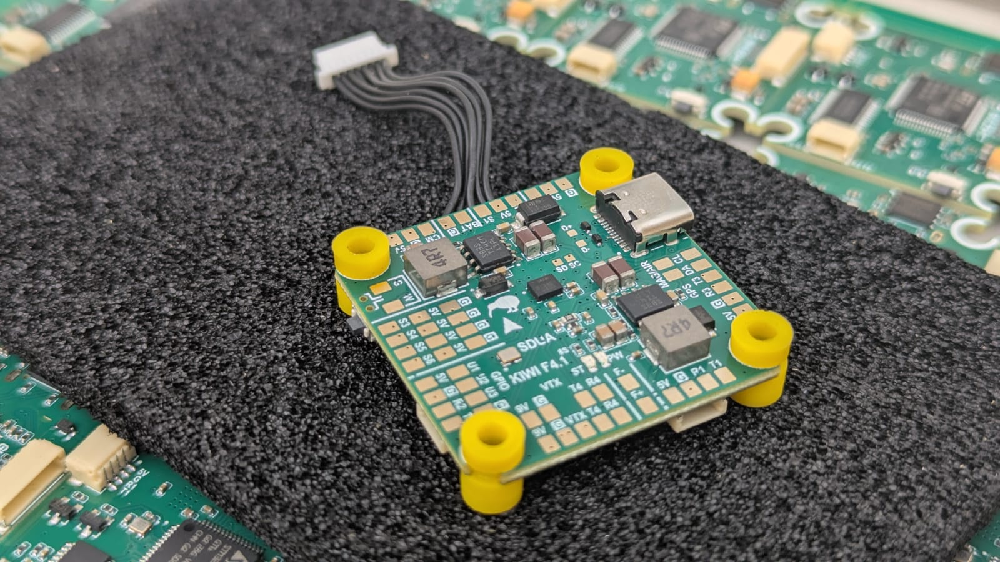

Flight Controller Board: KIWI F405 12S Configuration

Description
KIWI F4.0 is a versatile flight controller based on the STM32F405, designed for FPV, wings, and autonomous platforms. The controller combines precision inertial sensing, OSD support, built-in Blackbox, and relay outputs for controlling external modules. Support for both Betaflight and ArduPilot allows this board to be used in a wide range of applications.
KIWI F4.0 is a reliable platform for building FPV drones, aircraft, and specialized autonomous systems with full support for Betaflight and ArduPilot. Thanks to flexible relay, sensor, and telemetry connectivity, the controller is ready for real-world mission use.
Firmware
- ArduPilot 4.6.2 KiwiF405-12S.zip
- Betaflight 4.5.3 BF-4.5.3.zip
- Betaflight 2025.12.0 BF-2025.12.0-beta.zip
- Betaflight 2026.12.3 BF-2026.12.3-alpha.zip
Pinout and Diagrams

{kind=link}
Features
- Industrial-grade IMU Invensense ICM-42688P with external clock
- Bosch BMP388 barometer for altitude measurement
- Integrated 128Mbit Blackbox flash memory (W25Q128FV)
- MAX7456 OSD chip for overlaying telemetry on analog video
- High-precision voltage and current monitoring via ADC (VBAT, CURRENT)
- GPIO-controlled relay outputs for powering VTX, cameras, or pyrotechnic systems
- 4 motor PWM outputs (DShot, bidirectional on M1 & M3) + 6 auxiliary channels
- USB Type-C with DFU firmware flashing support
- Full CRSF / ELRS telemetry support (RSSI, LQ, SNR, Power)
Technical Specifications
- MCU: STM32F405RG (168 MHz, 1024 KB flash)
- Crystal: 16 MHz external oscillator
- IMU: ICM-42688P (SPI2, rotation ROLL_180_YAW_90)
- Barometer: BMP388 (I2C1, address 0x76)
- OSD: MAX7456 (SPI1)
- Flash Memory: W25Q128FV 128 Mbit (SPI3)
- Dimensions: 36×36 mm, mounting 30.5×30.5 mm
- LED: PC2 (active low)
Serial Ports
| Port | ArduPilot | Default Protocol | Pins | Notes |
|---|---|---|---|---|
| USB | SERIAL0 | MAVLink | PA11, PA12 | OTG FS, Type-C |
| USART1 | SERIAL1 | RC Input | PB6, PB7 | |
| USART2 | SERIAL2 | MAVLink2 (460800) | PA2, PA3 | Alt: RC via TIM9 |
| USART3 | SERIAL3 | GPS (115200) | PC10, PC11 | |
| UART4 | SERIAL4 | SmartAudio | PA0, PA1 | VTX control |
| UART5 | SERIAL5 | ESC Telemetry | PC12, PD2 | NODMA |
PWM Outputs
Motors (TIM8, DShot capable)
| Output | Function | Pin | Timer | DShot Bidir |
|---|---|---|---|---|
| PWM1 | Motor 1 | PC9 | TIM8_CH4 | Yes |
| PWM2 | Motor 2 | PC8 | TIM8_CH3 | No |
| PWM3 | Motor 3 | PC7 | TIM8_CH2 | Yes |
| PWM4 | Motor 4 | PC6 | TIM8_CH1 | No |
Auxiliary Channels
| Output | Pin | Timer |
|---|---|---|
| PWM5 | PA8 | TIM1_CH1 |
| PWM6 | PA9 | TIM1_CH2 |
| PWM7 | PB11 | TIM2_CH4 |
| PWM8 | PB10 | TIM2_CH3 |
| PWM9 | PB1 | TIM3_CH4 |
| PWM10 | PB0 | TIM3_CH3 |
GPIO / Relay Outputs
| Label | Pin | GPIO | Function |
|---|---|---|---|
| U1 | PA4 | 100 | External GPIO |
| U2 | PA10 | 102 | External GPIO |
| U3 | PC15 | 101 | External GPIO |
| F+ | PC14 | 103 | Relay (RELAY1) |
Power Monitoring
- Battery Voltage: PC0 (ADC pin 10, scale 21.0)
- Battery Current: PC1 (ADC pin 11, scale 142.9)
- Default monitor type: Analog (type 4)
SPI Bus Assignment
| Bus | Device | Chip Select | Speed |
|---|---|---|---|
| SPI1 | MAX7456 | PC3 | 10 MHz |
| SPI2 | ICM-42688P | PC5 | 2/8 MHz |
| SPI3 | W25Q128FV | PC13 | 104 MHz |
I2C Bus
- I2C1: PB8 (SCL), PB9 (SDA) — BMP388 barometer at 0x76, external compass probing
Debug
- SWDIO: PA13
- SWCLK: PA14
Premium Features
Kiwi OSD Pinio Elements (Betaflight 2025.12+)
Custom OSD text elements that change based on PINIO switch state (User 1–4 boxes). Each element displays configurable ON/OFF text labels, useful for showing relay status, arming indicators, or mission state on the OSD.
CLI Settings
| Setting | Description |
|---|---|
kiwi_osd_pinioN_text_on | Text shown when User N switch is active |
kiwi_osd_pinioN_text_off | Text shown when User N switch is inactive (use - to hide) |
kiwi_osd_pinioN_pos | OSD screen position (341 = hidden) |
Where N is 1–4 corresponding to PINIO1–PINIO4.
Example Setup
# Show SAFE/ARMED on OSD driven by User 2 switch
set kiwi_osd_pinio2_text_on = ARMED
set kiwi_osd_pinio2_text_off = SAFE
set kiwi_osd_pinio2_pos = 2242
# Show PARACHUTE only when User 3 switch is active, hidden when off
set kiwi_osd_pinio3_text_on = PARACHUTE
set kiwi_osd_pinio3_text_off = -
set kiwi_osd_pinio3_pos = 2274
# Assign User 2 to AUX3 switch (high position)
aux 3 41 3 1700 2100 0 0
# Assign User 3 to AUX2 switch (high position)
aux 4 42 2 1700 2100 0 0
save
Hardware Notes
On the KIWI F405 12S, only PINIO4 (PA4 / RELAY1) has a physical GPIO pin. PINIO1–3 are defined as NONE in the hardware config, but the OSD elements still work — the User box toggles the logical state, and the OSD text updates accordingly. No physical pin is needed for OSD-only use.
Default Parameters
- Frame: Quadcopter (FRAME_CLASS=1, FRAME_TYPE=3 BetaFlight X reversed)
- Motor protocol: DShot (MOT_PWM_TYPE=5)
- BLHeli passthrough: enabled (SERVO_BLH_AUTO=1, mask=15)
- Flight mode channel: CH8
- VTX: enabled, band 6, channel 4, freq 1240